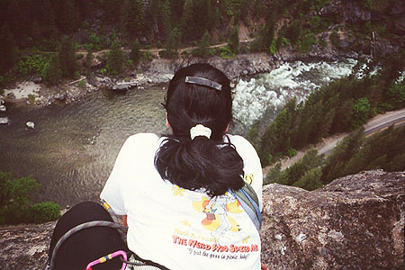
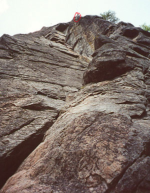
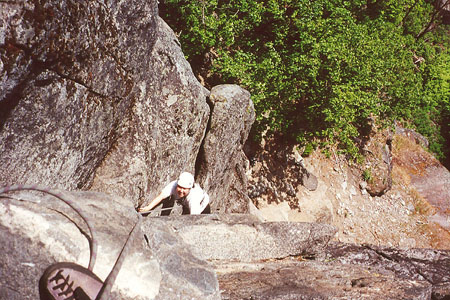
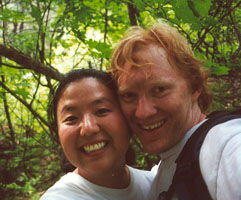

Icicle Creek Climbing
- May 13 - 14, 2000
One day at work, Kris sent some email, suggesting we spend the weekend climbing at Leavenworth. Boy, was I excited! I planned all kinds of stuff in my mind, ultimately settling on a climb of Saber on Castle Rock, followed by a climb of the “R & D Route” in Icicle Canyon. We would stay in a motel in town during the annual Maifest event. The week crept slowly by as I dreamed of high crags, wind and sun.
Early Saturday, with Kris napping, we made the drive and pulled up at the base of Castle Rock. A warning bell went off at the sight of a “tour bus” with a few helmets and ropes inside. Saber is a three pitch moderate route, rated 5.4, and was recently mentioned in Rock and Ice magazine. I was sure that the tour bus was bound for that route or the equally popular Midway. Kris and I toiled up to the sound of the roaring river below. Once there, sure enough! A listless collection of bodies at the base of Saber, with their guides starting the route. A wait of several hours was inevitable. So we hiked back down to the car, intending to climb the R & D Route today. Kris didn’t feel ready for the first pitch of Midway.
I got kind of tense with my “mental picture” of the perfect climbing weekend already heavily modified. We got some food, and drove out to the R \& D Route, only to find about a dozen climbers on it, many lolling aimlessly at the base! Arrgh! To kill time I set up a top-rope at Barney’s Rubble, but it was a little hard for Kris. We left there (I’m losing my always fragile cool with the various delays), finally deciding to let it all go, and head down to the river for a nap. This was the perfect prescription, and the roar of Icicle Creek took my troubles away. It’s so hard for me to “go with the flow” sometimes, since usually my climbing partner and I are willing to get up at an unholy hour, and climb/hike like machines to avoid crowds/heat/darkness. Kris isn’t willing to do that stuff, so I start the day out somewhat pained, and imagining the helmeted hordes scrambling to the base of imaginary routes and settling down for a loong sloow climb. “Oh no, I’m going to be looking up at the hordes, not down!” my fevered brain tells me.
So it’s very important for me to learn to relax!
Anyway, after the nap I top-roped “Classic Crack” (5.9), doing it as a lieback rather than jamming. I want to do it with jamming, because then I should be able put in protection on lead, but I just wasn’t able to figure it out.
Finally, we started climbing the R & D Route. This was my first multi-pitch climb, done with Steve back in October 1998. That was such an adventure! I climbed the first pitch easily. There is a roof that looks intimidating, but you can climb it directly with blocky holds in a fault. To get to the belay, I had to traverse 15 feet to the right, and Kris simul-climbed that same distance. She did well, because the climbing was difficult right off the belay. Kris was smiling when she emerged from the roof, finding the climbing challenging but fun. I took off again on an easy pitch to a scenic ledge, and brought Kris up. She enjoyed this one the most, especially a hidden chimney where you climb with one foot on each wall. The final pitch had a difficult start, kind of a hop across to a ledge. I climbed up, enjoying a great hand crack that led to a dead tree and easier climbing. Last time, I had slung this tree, creating ridiculous rope drag for myself with even a short bend in the rope. Now, I knew better!
I belayed on a ledge at the top of the climb and the end of the rope. Kris found this pitch pretty hard, using aid where needed. The start and first crack were no problem, but the long crack after the dead tree were tough. Still, so was she, and soon we were both on top! I set up a rappel, with a fun free-hanging section, and we were deposited on loose, sandy ledges. Kris had learned a lot since Red Rocks, and scrambled down this material efficiently and well. I was impressed! I don’t know how comfortable I’ll ever get with this kind of terrain, and I felt Kris was adjusting to it better.




Now we could enjoy a great meal in town, get some ice cream, listen to some accordion music and wander the “Bavarian” streets. This was as much fun as climbing in the cool evening. Our motel was nice, especially the shower. The next morning, we got up late and went to a Bernese Mountain Dog competition. These huge, calm, beautiful black dogs were pulling flower carts or resting in the shade. We really liked them a lot!
After this, we headed out to Castle Rock for a new attack on Saber. This route was first climbed in 1956 by Pete Schoening, known in climbing circles as “The Belay.” In the late 1950’s, on the first American climbing expedition to K2 in the Himalayas, Pete distinguished himself with an amazing rescue of 6 climbers! They were descending with a seriously injured climber from high camp. Suddenly, someone fell, pulling the others off for a long snowy ride to certain death. In the tangle of ropes and bodies, Pete jammed his ice ax into the slope and held fast! Unbelievably, the ropes were tangled in such a way that his action stopped all the climbers hurtling off the mountain. There is a lot more to this story, but even this bit of history makes the climb more interesting.
The rock was almost deserted, and I started climbing, really enjoying it, and impressed with the chimney that I worked my way up. It was steep and exposed, but protected very well. I felt this was definitely harder than “5.4,” probably 5.6. The belay station was a small ledge, with room for gear in the crack on the right. I brought Kris up, and she did really well. She’s had so little practice climbing cracks, since it’s hard to find that in the climbing gym, but she attacked it creatively, and came up looking really good.
Here, I went left on the ledge, then up to a bigger ledge. Now I got seriously off route! A party above us had exited up and right, and I was for some addle-brained reason impressed that we should do the same. Nothing in the guidebook description really made sense, so I decided to traverse under a bulge, to a tricky 5.7 traverse bringing me to a ledge above a fixed pin. I didn’t know if Kris could see that maneuver, but there was gear at the start of the traverse. I headed up on easy ground to a tree around a corner. Less than half the rope was out, but we couldn’t hear each other. I put Kris on belay and she came up to the ledge before the traverse.
By the run of the rope, Kris couldn’t tell what I had done from here, and wasn’t keen on looking around the corner and the bulge. She was totally stuck there, and we shouted at each other with no idea what we were saying. Finally, after about 10 minutes of no movement, we considered that we might need a rescue of some sort. Well this was too much. I told her not to move, then I tied off the belay, gave myself 20 feet of rope, and climbed down to where I could see her. This helped, and she climbed around the corner, then did a tension traverse to the ledge below me. Up at the tree we talked about the mishap, then I hiked up the easy final pitch. Kris enjoyed this one the most, it was probably about 5.2 in rating. It was great on the top, with views down to the river and highway, and across to Drury Falls, which reminded me of Yosemite.